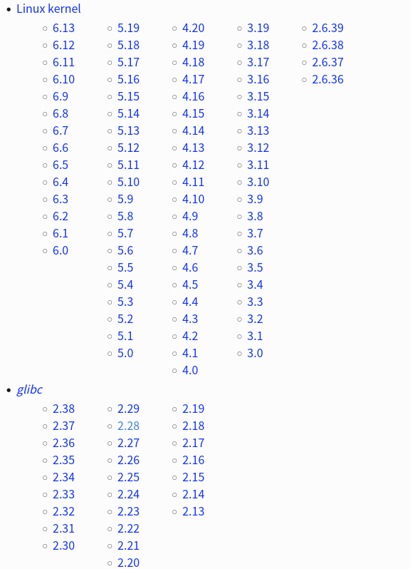

Toolchain
- GCC compiler, Binutils, and Glibc.
Basic System:
- Linux kernel
- Coreutils (basic file, shell, and text utilities)
- Bash shell
- GCC (GNU Compiler Collection)
- Binutils (binary tools like the assembler and linker)
Linux From Scratch
-
Source Code
In Linux From Scratch, you’ll compile everything from source code. This means you’ll be downloading raw code files and compiling them into binaries that your system can run.
Understanding how to use compilers like GCC (GNU Compiler Collection) will be essential. -
Toolchain
A toolchain is a collection of programming tools used to develop a software project.
In LFS, you’ll be building a temporary toolchain (consisting of compilers, linkers, and libraries) that will be used to compile the rest of the system. -
Bootloader
The bootloader is the first software that runs when your computer starts up.
In LFS, you’ll need to install and configure a bootloader (like GRUB) to ensure your system can boot into the operating system you’ve built. -
Kernel
The Linux kernel is the core of the operating system, managing hardware resources and enabling communication between hardware and software.
In LFS, you’ll download and compile the kernel yourself. -
File Systems
LFS requires a solid understanding of Linux file systems, such as ext4. You’ll need to format partitions, create a root file system, and set up the necessary directories for your system.
Linux Kernel
https://cdn.kernel.org/pub/linux/kernel/v5.x/linux-5.15.165.tar.xz
// sudo apt build-dep linux-image-amd64
sudo apt install bc binutils bison dwarves flex gcc git \
gnupg2 gzip libelf-dev libncurses5-dev libssl-dev \
make openssl pahole perl-base rsync tar xz-utils
$ make defconfig
$ make -j8
编译结果 arch/x86/boot/bzImage

GNU C Library
https://www.gnu.org/software/libc/
C运行库: 是linux系统中最底层的api（应用程序开发接口），几乎其它任何的运行库都会依赖于glibc
C语言标准仅仅定义了C标准库函数原型，并没有提供实现
Linux 操作系统C运行时库（C Run Time Libray，CRT）是 glibc（GNU C Library）
Windows操作系统C运行时库（C Run Time Libray，CRT）是 MSVCRT（Microsoft Visual C Run-time）
几乎所有C程序都要调用glibc的库函数，所以glibc是Linux平台C程序运行的基础
最基本、最常用的C标准库函数和系统函数在libc.so库文件中，几乎所有C程序的运行都依赖于libc.so
有些做数学计算的C程序依赖于libm.so，多线程的C程序依赖于libpthread.so。
libc有时时专指libc.so这个库文件，而说glibc时指的是glibc提供的所有库文件。
glibc的发布版本主要由两部分组成，一部分是头文件，比如stdio.h、stdlib.h等，它们往往位于/usr/include
Source
wget https://ftp.gnu.org/gnu/glibc/glibc-2.28.tar.gz
./configure --prefix=/usr \
--disable-profile \
--enable-add-ons \
--with-headers=/usr/include \
--with-binutils=/usr/bin
make
make install
# 检查版本
/usr/bin/ldd --version
strings /lib64/libc.so.6 |grep GLIBC_
GNU Compiler Collection
C编译器: 是Linux系统上常用的编译工具
# ubuntu/debian
sudo apt install gcc
sudo apt install build-essential
# centos/fedora/redhat
yum install gcc
yum groupinstall development
# alpine
sudo apk install build-base
# 检查版本
/usr/bin/gcc --version
Source
1. 解压源码
wget https://ftp.gnu.org/gnu/gcc/gcc-11.2.0/gcc-11.2.0.tar.xz
2. 下载依赖
cd gcc-11.2.0
./contrib/download_prerequisites
3. 编译并安装
mkdir ../build && cd ../build
export INSTALLDIR=/usr/local/gcc-11.2.0
../gcc-11.2.0/configure \
--prefix=${INSTALLDIR} \
--enable-shared \
--enable-threads=posix \
--enable-__cxa_atexit \
--enable-clocale=gnu \
--enable-languages=c,c++ \
--disable-multilib
4. 修改环境变量
export PATH=/usr/local/gcc-11.2.0/bin:$PATH
export LD_LIBRARY_PATH=/usr/local/gcc-11.2.0/lib64:$LD_LIBRARY_PATH
export CC=/usr/local/gcc-11.2.0/bin/gcc
export CXX=/usr/local/gcc-11.2.0/bin/g++
GNU Binary Utilities
https://www.gnu.org/software/binutils/
Binutils: 是一系列二进制工具的集合,主要包括 ld连接器 as汇编器 strip从目标文件中移除符号信息
# debian/ubuntu
sudo apt-get install binutils
# centos/redhat
yum install binutils
# alpine
sudo apk install binutils
# 检查版本
/usr/bin/ld --version
/usr/bin/as --version
Source
wget https://ftp.gnu.org/gnu/binutils/binutils-2.27.tar.gz
./configure --prefix=/usr/local/binutils
make
make install
Makefile
make是最常用的构建工具, 配置文件Makefile
GNU 软件的安装过程都是
./configure
make
make install
或者指定目录
./configure --prefix=/usr
make -4
make install DESTDIR=/tmp/app
autotools生成makefile还是太麻烦，所以现在人们都开始倾向于用 CMake, SCons
# 阶段1
最早的时候, 发布代码包时，一般会附带相应的 Makefile 文件。
然后就可以 make && make install 来编译工程, 当时并不需要这个运行 configure 的步骤
# 阶段2
安装到不同的平台上使用, 需要对 Makefile 文件进行调整
为了避免手工做这些调整，人们开始写 configure 脚本来自动做这些调整工作
常见的就是用 –prefix 来指定安装路径，用configure –help来查看说明等等
# 阶段3
手写configure脚本工作量太巨大了，而且以后维护也比较麻烦
Autoconf 和 Automake 是一套自动生成 configure 脚本和 Makefile 文件的工具
用 Autoconf 自动生成的 configure 能完美的支持各种不同的平台上(手工写几乎是不可能的)
在模版文件 configure.ac 和 Makefile.am 做好以后
autoreconf --install
./configure && make
更新 config.guess 和 config.sub
https://git.savannah.gnu.org/git/config.git
https://git.savannah.gnu.org/gitweb/?p=config.git;a=blob_plain;f=config.guess
https://git.savannah.gnu.org/gitweb/?p=config.git;a=blob_plain;f=config.sub
find . -type f -name "config.guess" -exec cp ~/config.guess {} \;
find . -type f -name "config.sub" -exec cp ~/config.sub {} \;
initrd / initramfs
https://geek-logic.com/debian-11-on-loongson/
https://www.bytezonex.com/archives/hIO_Vpg9.html
https://blog.csdn.net/kwdecsdn/article/details/129151631
initrd 模拟成一个块设备
initramfs 直接使用内存文件系统, 比 initrd 更加高效和灵活，并且更加节省内存。
initrd 是一个镜像文件，包含了启动过程中必需的驱动程序和启动脚本
ramfs 和 tmpfs：内存文件系统
ramfs 完全运行在内存中的磁盘，它非常快速，但存储在其中的数据会随着系统重启而消失
tmpfs 扩展 ramfs 。它不仅可以利用内存作为存储空间，还可以使用交换分区来存储数据
首先要介绍kernel启动init的两种方案。
第一种是，ramdisk，就是把一块内存（ram）当做磁盘（disk）去挂载，然后找到ram里的init进行执行。
第二种是，ramfs，直接在ram上挂载文件系统，执行文件系统中的init。
initrd（init ramdisk）就是ramdisk的实现，initramfs就是ramfs的实现。
Note：
tmpfs，是ramfs的增强版方案。
rootfs，是ramfs/tmpfs的一个特殊实例。
所以initramfs也可以是tmpfs/rootfs的实现
xorg / fluxbox
Display manager (xorg) & Window Manager (fluxbox)
直接使用 xorg + lightdm 就可以启动 x11-apps
Fluxbox is based on the BSD license, while Openbox is licensed under the GPL.
Fluxbox is simpler and faster than Openbox.
It has a more traditional window manager layout with smaller windows that are easier to manage.
$ sudo apt install xorg
$ sudo apt install fluxbox
$ sudo apt install lightdm // sddm, gdm3
$ systemctl get-default
dpkg-reconfigure lightdm
systemctl set-default graphical.target
systemctl set-default multi-user.target
fluxbox source (installed xorg & lightdm)
$ apt build-dep fluxbox
$ tar -xf fluxbox-1.3.7.tar.gz
$ vi util/fluxbox-remote.cc // text_prop.value != 0
$ ./configure
$ make
$ make install
$ reboot
默认启动 mlterm 手动执行startfluxbox
修改默认 /usr/share/xsessions/lightdm-xsession.desktop
Exec=/usr/local/bin/startfluxbox
======== apt install stow
mkdir -p /usr/local/stow/fluxbox ;
git clone https://github.com/fluxbox/fluxbox.git;
cd fluxbox; autoupdate; ./autogen.sh;
./configure --prefix=/usr/local/stow/fluxbox ;
make -j$(nproc); make install ;
STOW_DIR=/usr/local/stow /usr/bin/stow fluxbox
fluxbox 自定义
~/.fluxbox/init
session.menuFile: ~/.fluxbox/menu
session.keyFile: ~/.fluxbox/keys
session.styleFile: /usr/local/share/fluxbox/styles/bloe
session.configVersion: 13
## 背景图 background
apt install feh
feh --bg-fill adwaita-d.jpg
## 背景图 background
fbsetbg adwaita-d.jpg
## 背景图 background 和 lightdm一致
# /usr/share/lightdm/lightdm-gtk-greeter.conf.d
# background=/usr/share/images/desktop-base/login-background.svg
# /usr/share/desktop-base/active-theme/wallpaper/contents/images/1920x1080.svg
fbsetbg /usr/share/images/desktop-base/desktop-background
## 修改 menu
[begin] (Fluxbox-1.3.7)
[encoding] {UTF-8}
[exec] (Terminal) {mlterm}
[exec] (thunar) {thunar}
## 开始菜单，任务栏; 开机启动在exec fluxbox之前
apt install lxpanel
vi ~/.fluxbox/startup
lxpanel &
## 推荐 terminal
https://www.tecmint.com/linux-terminal-emulators/
apt install qterminal
apt install lxterminal
apt install xfce4-terminal
## 推荐
https://bbs.archlinux.org/viewtopic.php?id=77729
apt install thunar // 文件管理器Files
apt install neovim-qt
apt install mousepad
Example
开始菜单+任务栏, 不是必须的
## dock栏
sudo apt install plank
## 状态栏
apt install polybar
## 运行命令 app launcher
apt install rofi
rofi -show drun
## 隐藏 fluxbox toolbar
https://askubuntu.com/questions/993260/fluxbox-remove-toolbar
$ vim ~/.fluxbox/init
session.screen0.toolbar.visible: false
dock: nvim-qt, terminal, mousepad
[begin] (Fluxbox-1.3.7)
[encoding] {UTF-8}
[exec] (Terminal) {mlterm}
[exec] (Run) {rofi -show drun}
[exec] (Files) {thunar}
[submenu] (Browsers)
[exec] (lynx) {xterm -e lynx fluxbox.org}
[end]
[submenu] (Editors)
[exec] (mousepad) {mousepad}
[exec] (nano) {xfce4-terminal -e nano}
[exec] (vim) {qterminal -e vim}
[exec] (nvim) {nvim-qt}
[end]
[submenu] (X-utils)
[exec] (xclock) {xclock}
[exec] (xcalc) {xcalc}
[exec] (xfontsel) {xfontsel}
[exec] (xman) {xman}
[exec] (xload) {xload}
[exec] (xbiff) {xbiff}
[exec] (editres) {editres}
[exec] (viewres) {viewres}
[exec] (xmag) {xmag}
[exec] (Reload .Xdefaults) {xrdb -load $HOME/.Xdefaults}
[end]
[submenu] (System Tools)
[exec] (Audio) {xterm -e alsamixer}
[reconfig] (Reload config)
[restart] (Restart)
[exec] (About) {(fluxbox -v; fluxbox -info | sed 1d) | xmessage -file - -center}
[separator]
[exit] (Exit)
[end]
[endencoding]
[end]
About Links
https://mirrors.ustc.edu.cn/lfs/lfs-packages/